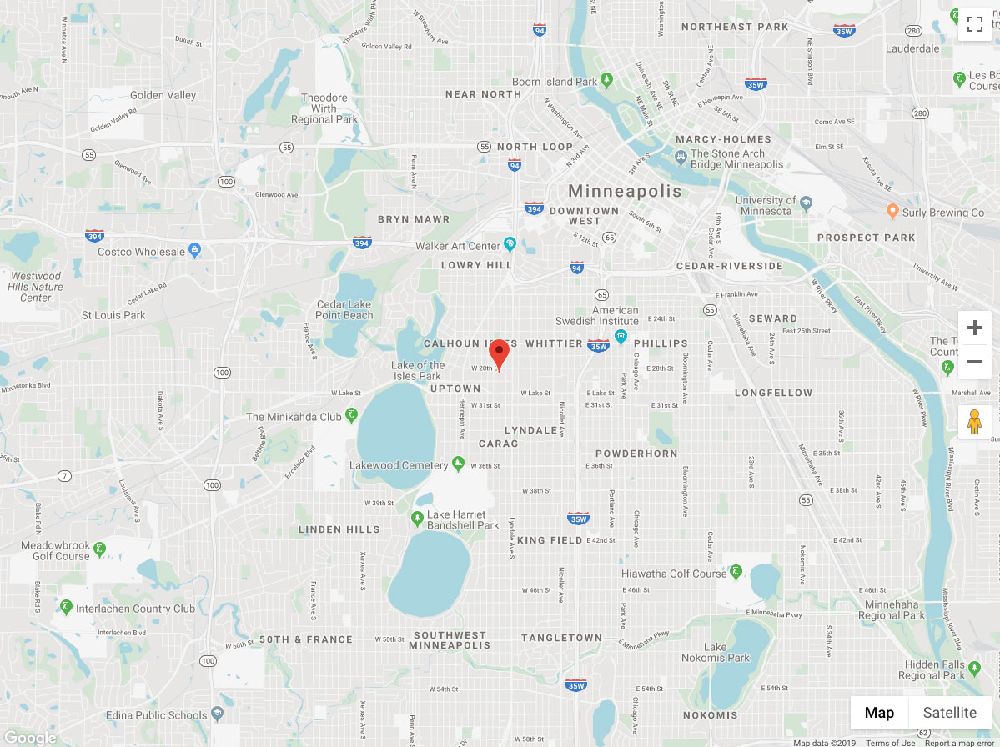

<div class="path-node node node-type-event">
	<div class="overflow-guard">
		


<div class="layout-container">

	
			
		

		

		

		

		

	
			<main role="main" class="main-page-content">
			<a id="main-content" tabindex="-2"></a>
							<div class="layout-content">
												<div class="has-main-image">

<article class="node-content node-event">
		<div class="main-node-content">
															<section id="section-1" class="node-section">
								

<div class="layout layout--onecol">
      <div class="layout__region layout__region--content">
    																						
<div class="block block-breadcrumbs">
					<nav class="breadcrumb" aria-labelledby="system-breadcrumb">
		<h2 class="visually-hidden">Breadcrumb</h2>
		<ol class="breadcrumb-list">
							<li>
											<a href="#">Home</a>
									</li>
							<li>
											<a href="#">Events</a>
									</li>
					</ol>
	</nav>
	</div>																			    </div>
  </div>							</section>
													<section id="section-2" class="node-section">
								

<div class="layout layout--onecol">
      <div class="layout__region layout__region--content">
    																						
<div class="block-field block-field-banner">
									<div class="field field-banner">
																	<article>
						<div class="field field-media-image">
							
						</div>
					</article>
											</div>
			</div>																					
<div class="block-field block-title">
				<div class="field title">
			<h1 class="page-title">Event Example</h1>					</div>
	</div>																					
<div class="block-field block-field-date">
									<div class="field field-date">
																							<time>December 19, 2019 - 9:49pm</time>
												</div>
			</div>																					
<div class="block-field block-body">
				<div class="field body text-with-summary">
							<p>Beats all you&#039;ve ever saw, been in trouble with the law since the day they was born. Straight&#039;nin&#039; the curve, flat&#039;nin&#039; the hills. Someday the mountain might get &#039;em, but the law never will. Makin&#039; their way, the only way they know how, that&#039;s just a little bit more than the law will allow. Just good ol&#039; boys, wouldn&#039;t change if they could, fightin&#039; the system like a true modern day Robin Hood.</p>
							<p>Fanny pack ullamco et veniam semiotics. Shoreditch PBR reprehenderit cliche, magna Tonx aesthetic. Narwhal photo booth DIY aute post-ironic anim. Vice cliche brunch est before they sold out fap, street art Odd Future fashion axe messenger bag nihil Tonx tattooed. Nihil hashtag incididunt, do eu art party Banksy jean shorts four loko typewriter.</p>
					</div>
	</div>																			    </div>
  </div>							</section>
													<section id="section-3" class="node-section">
								

<div class="layout layout--onecol">
      <div class="layout__region layout__region--content">
    																						
<div class="block-field block-field-event-location">
									<div class="field field-event-location">
																	<div class="map-fake">
						<a href="#" class="map-open">
							<div class="image-wrapper">
								
							</div>
						</a>
						<div class="map-overlay">
							<a href="#" class="map-close"></a>
							<p>Due to Google Map embed restrictions, a true map cannot be displayed. This is a screenshot of approximately what a location map will look like on the event node.</p>
						</div>
					</div>
							</div>
			</div>																			    </div>
  </div>							</section>
												</div>
</article>

	</div>
							</div>						
			
			
		</main>
	
	
	
			
<div class="back-anchor"><a href="#" role="button" aria-label="back-to-top"></a></div>	</div>
	</div>
</div>
